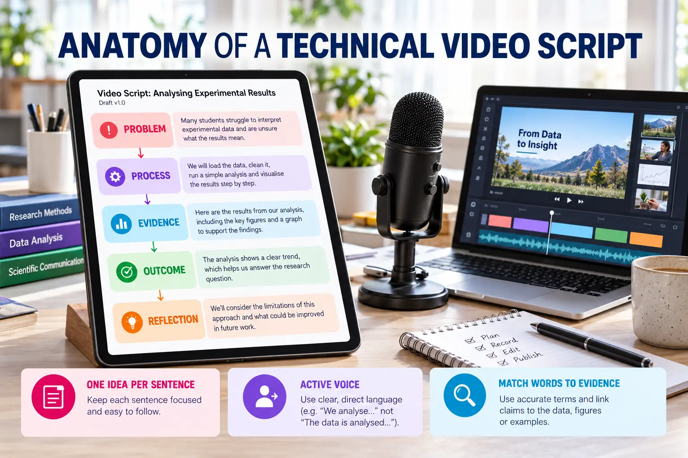

Scriptwriting for Technical Videos
Write concise narration that connects project claims with visible evidence.

Recommended script structure
Problem
Identify the user, need or limitation that motivated the project.
Process
Explain the important design or development decisions.
Evidence
Direct attention to the screen, interface, repository or result.
Outcome
State what was completed without exaggerating its impact.
Reflection
Describe one lesson, limitation or next improvement.
Model 90-second script
Our project addresses the difficulty students face when organising digital learning resources. We designed the interface in Figma, refined the workflow with Google Stitch and managed the website files through GitHub. The published demonstration shows the main navigation, responsive layout and resource categories. These screens provide evidence that the planned user flow has been implemented. The next improvement will focus on accessibility testing and mobile performance.
Writing rules
- Use one idea per sentence and prefer active voice.
- Describe what the viewer cannot immediately infer from the screen.
- Match every important claim with visible evidence.
- Use the same technical terms throughout the video.
- Avoid reading long on-screen text word for word.
- Verify every name, URL and numerical statement.
Length guide: approximately 170–210 words is usually sufficient for a 90-second video, but allow silent time for interface demonstrations and transitions.
Reusable script prompt
Write a 90-second technical video script for first-year university students. Project: [PROJECT NAME] Problem: [USER NEED] Process evidence: [TOOLS AND DECISIONS] Demonstration evidence: [WORKING FEATURES] Outcome: [WHAT WAS COMPLETED] Reflection: [LESSON AND NEXT IMPROVEMENT] Use proper English, active voice and short sentences. Do not invent evidence.